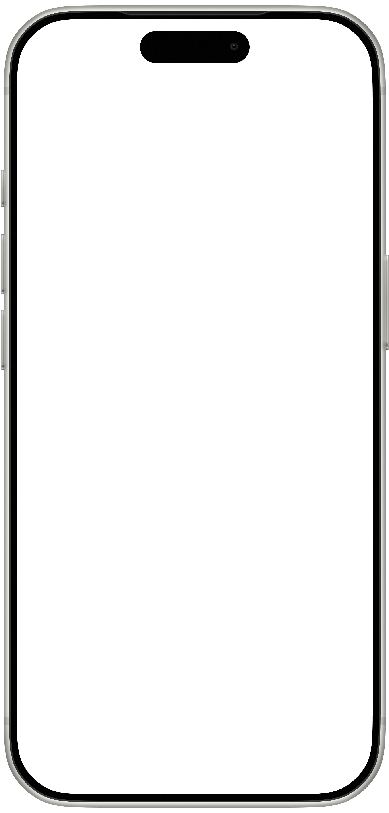

SLIVER CARE
One check-in.
A little peace of mind.
V2.4Medication reminders · Family follow-upSimulated times, notifications & calls.
No real services are connected.
No real services are connected.
Guide
Follow every step. See every response.
Ready to startChoose a scenario. Highlights show where to look; rings show where a tap happens.
01Margaret
Older adult
One small step. Peace of mind.

↔ConnectedLive updates within this demo
Reminder↓Check-in↓Family follow-up
02Alex
Family
Stay informed. Stay close.
DEMO CONTROLLER